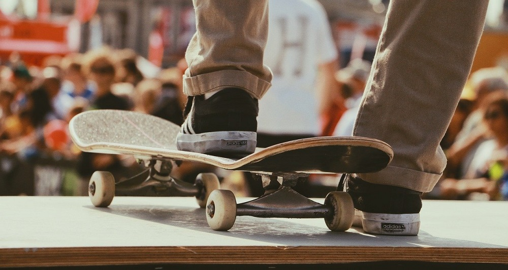
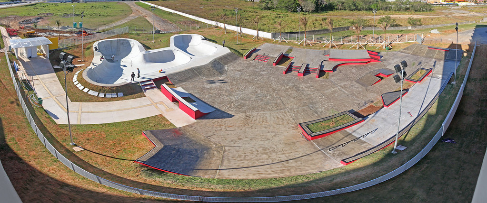
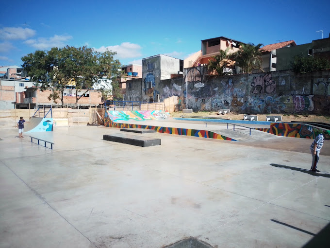
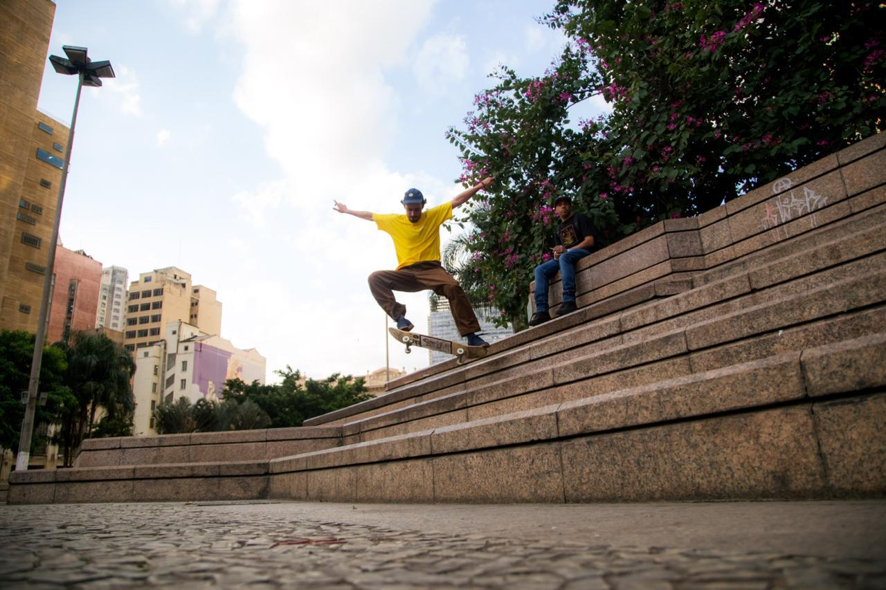

Top 3 lugares que gosto de ir.
Atualmente estou me aprofundado no esporte radical, o skate e utimamente frenquento as pistas e picos para andar. Listei os lugares onde mais ando.
1-Pista Mogi das Cruzes
A primeira pista que eu andei e ando até hoje, é um lugar extremamente agradavel há muitos luagares para se andar tendo corrimãos, gaps, bordas e rampas. Essa pista está localizada proximo a estação Estudantes.
2-Pista Beira Rio.
Pode parecer uma pista simples, mas é muito divertida, ela foi recentemente reformada e adquiriu esse novo visual, novos caixotes e corrimãos e uma pirâmide. Esta localizada no Jardim Indaia.
3-Vale do Anhangabaú.
Por ultimo mas não menos importante o grandioso Vale, com suas grandes bordas e gaps intensos, gosto muito de lá por conta das amizades que se adquiri, sem falar dos grandes shows que acontecem. Fica localizado proximo a estação Anhangabáu.